PRINT string
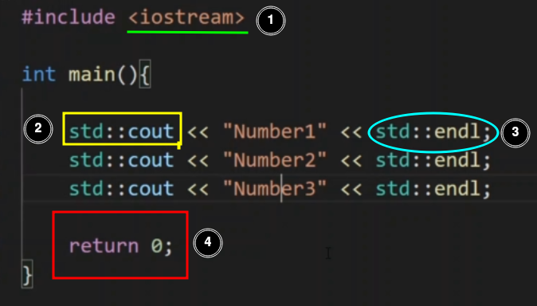
⇒ 1. library for functions
⇒ 2. std means standard library " :: " for taking cout funtion from iostream
⇒ 3. similarly endl for print line
⇒ 4. if program execute correctly it return 0 to cpu nd cpu will understand programme execute correctly.
COMMENTS
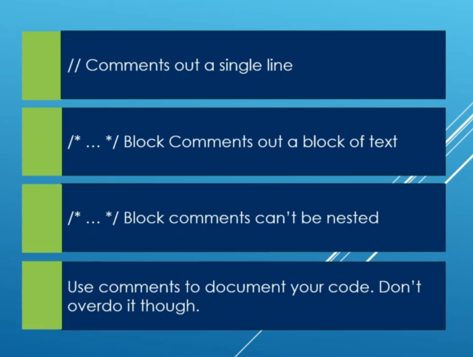
STATEMENTS AND FUNCTIONS
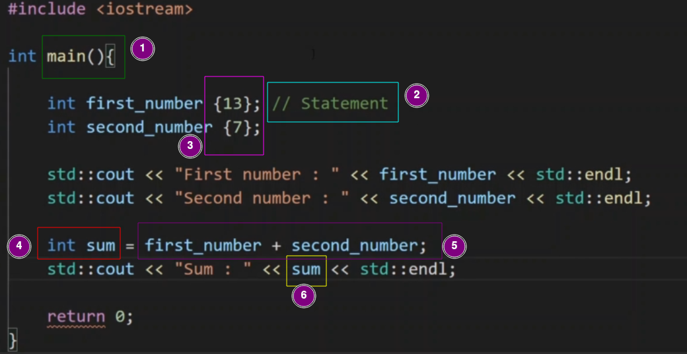
⇒ 1. a function called main
⇒ 2. comments “one liner”
⇒ 3. {13} put value 13 in varible first_number
⇒ 4. make a variable with name sum having int for integer data types
⇒ 5. sum of two variable the store it in sum variable
⇒ 6. print sum.
MAKE A FUNCTION
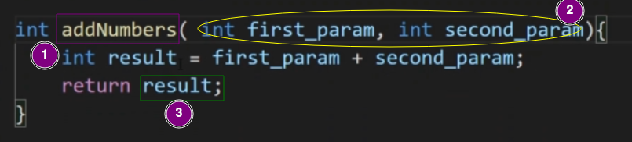
⇒ 1.function name.
⇒ 2.declare two variables for taking input nd further used in future.
⇒ 3.return the value of the result.
to use above function;
int main(){
int a = 1;
int b = 2;
sum = addNumbers(a,b); //return value of result to sum nd store in it
std::cout<< “sum of two no is: ”<< sum<<std::endl;
}
//////////////////////////////////////////////////////////////////////////
INPUT AND OUTPUT
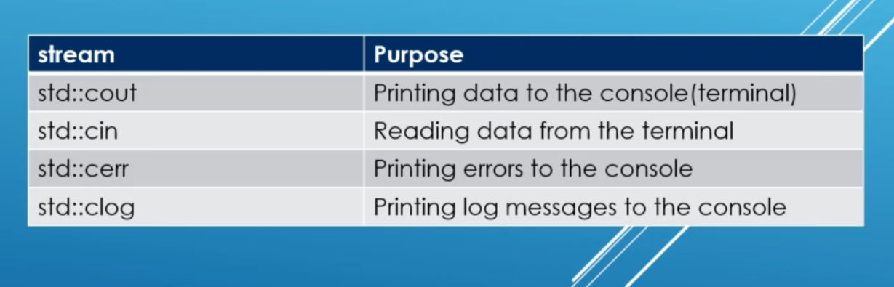
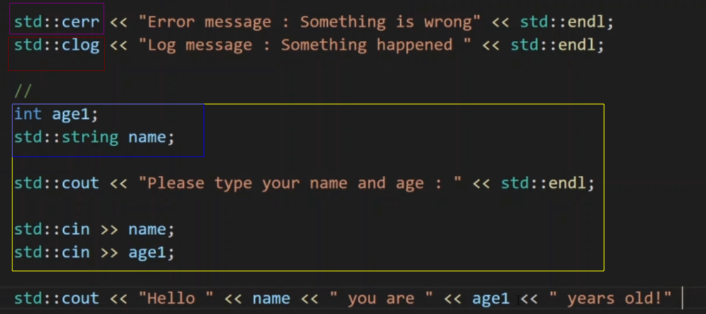
#include <string> //string data type library
int main(){
std::string name = "shwet";
std::cout<<name;
}
=> string data types library
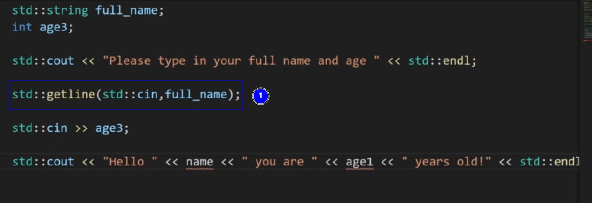
⇒ 1. if we dont't use getline func and run the program and enter the input as full name ex shwet kumar than program identify both shwet and kumar as diffrent input , so to use input in one line as one input we use getline func() std::cin for taking input and full_name is the variable to store the input.
function we have seen in this
• cout
• getline
• cin
• string
• cerr
• clog
CORE FEATURE V/S STANDARD LIBRARY V/S STL
core feat = ex int include etc.
standard lib = ex: string, iostream etc.
STL = ex: simple func which we made inside programme ex: main, add_no etc
BASE 10
no. in base 10
| 2371 | 2 X 10^3 + 3 X 10^2 + 7 X 10^1 X 10^0 |
|---|---|
| 927 | 9 X 10^2 + 2 X 10^1 + 7 X 10^0 |
| 47 | 4 X 10^1 + 7 X 10^0 |
BASE 2
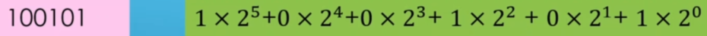
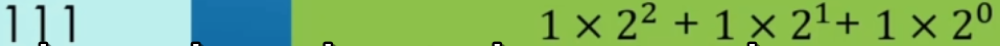
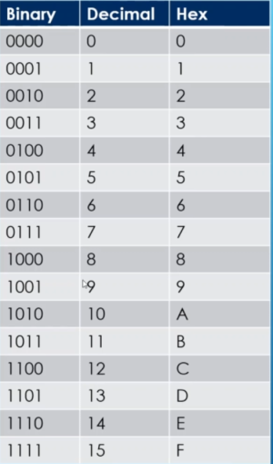 hexadecimal representation
BINARY TO HEXADECIMAL
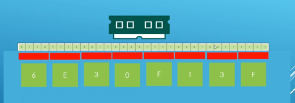
DECIMALS AND INTEGERS
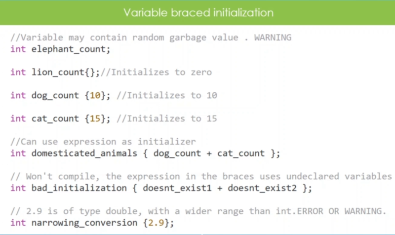
different types to store data in variable
#include <iostream>
int main(){
//brace initialisation
std::cout<<"[+] Brace Initialisation [+]"<<std::endl;
int cow_1st{1};
//int milk_of_1st {2.5}; //Give error but it is safe because here loss of data can't be occur
std::cout<<"cow: "<<cow_1st<<std::endl<<"milk: "<<"Compiler error had been occur"<<std::endl;
//functional initialisation
std::cout<<"[+] Functional Initialisation [+]"<<std::endl;
int cow_2nd(4);
int milk_of_2nd(2.8); //dont't give error but it causes loss of data.
std::cout<<"cow: "<<cow_2nd<<std::endl<<"milk: "<<milk_of_2nd<<std::endl;
//declare initialization
std::cout<<"[+] Declare Initialisation [+]"<<std::endl;
int cow_3rd = 5;
int milk_of_cow_third = 4.7; //dont't give error but it causes loss of data
std::cout<<"cow: "<<cow_3rd<<std::endl<<"milk: "<<milk_of_cow_third<<std::endl;
}
VVI formulae to find from how 0 to how many we can store value in each data types.
suppose char data is of one bytes means 8 bit.
so here we can store value from 0 to 2^8(2 to the power 8).
formulae to calculate range of signed or unsigned number
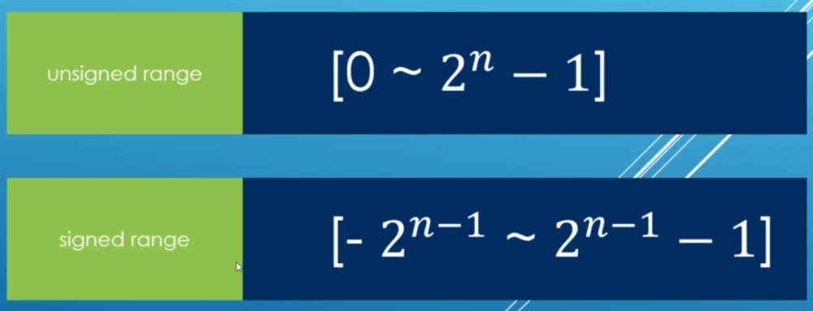
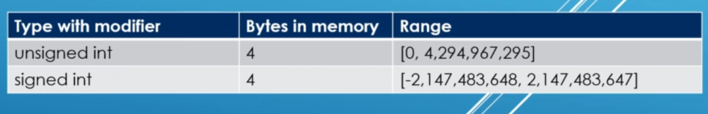
~~~~~~~~~~~~~~~~~~~~~~~~~~~~~~~~~~~~~~~~~~~~~~~
===============================================
~~~~~~~~~~~~~~~~~~~~~~~~~~~~~~~~~~~~~~~~~~~~~~~
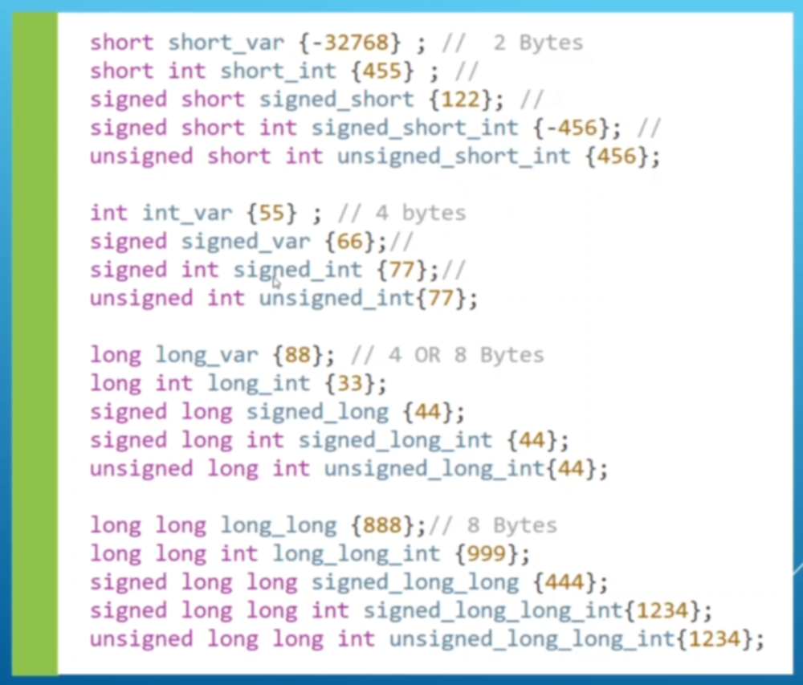
also called floating no
TYPES
SIZE PRECISION COMMENT
⇒ float 4 bytes 7 -
⇒ double 8 bytes 15 recommended default
⇒ long double 12 bytes > double
what is precision
1.23456700001 => here precision is 12.
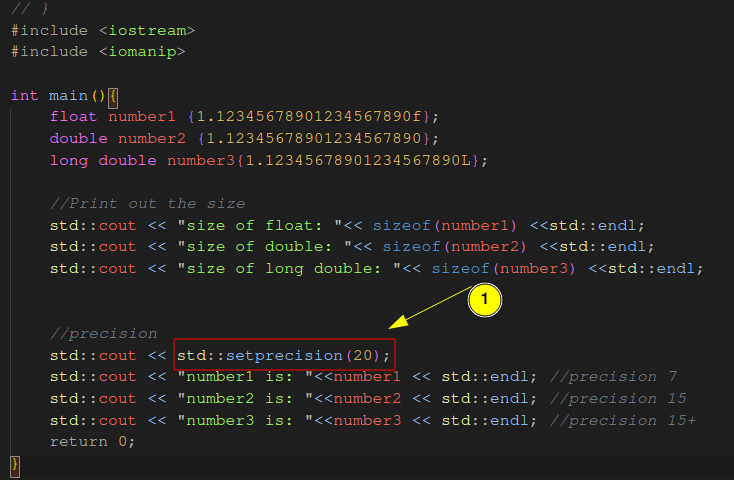e
output = 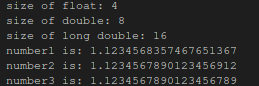
• 1 =>
size of boolean data types = 1 bytes or 8 bits
only store 2 value ("true" and “false”)
denoted by "bool"
#include <iostream>
int main(){
bool red_light{true};
bool green_light{false};
if (red_light == true){
std::cout<<"STOP!"<<std::endl;
}else{
std::cout<<"GO Through!"<<std::endl;
}
//OR we can also write above code as below.
if (red_light){
std::cout<<"STOP:)"<<std::endl;
}else{
std::cout<<"Go Through!"<<std::endl;
}
return 0;
}
• 1 -> true
• 0 -> false
#include <iostream>
int main(){
bool red_light{true};
bool green_light{false};
std::cout<<"red_light: "<< red_light<<std::endl;
std::cout<<"green_light: "<< green_light<<std::endl;
return 0;
}
or we can write same code above like below.
#include <iostream>
int main(){
bool red_light{true};
bool green_light{false};
std::cout<<"red_light: "<<std::noboolalpha<<red_light<<std::endl;
std::cout<<"green_light: "<<std::noboolalpha<<green_light<<std::endl;
return 0;
}
⇒ output
to see output as true or false we use std::boolalpha
like below.
#include <iostream>
int main(){
bool red_light{true};
bool green_light{false};
std::cout<<std::boolalpha;
std::cout<<"red_light: "<< red_light<<std::endl;
std::cout<<"green_light: "<< green_light<<std::endl;
return 0;
}
[[[[[or we can write above code as:) below also
]]]]]
#include <iostream>
int main(){
bool red_light{true};
bool green_light{false};
std::cout<<"red_light: "<< std::boolalpha<<red_light<<std::endl;
std::cout<<"green_light: "<< std::boolalpha<<green_light<<std::endl;
return 0;
}
char character1{'a'};
occupy 1 bytes or 8 bit in memory
#include <iostream>
int main(){
char character1{'s'};
char character2{'h'};
char character3{'w'};
char character4{'e'};
char character5{'t'};
std::cout<<"character1: "<<character1<<std::endl;
std::cout<<"character2: "<<character2<<std::endl;
std::cout<<"character3: "<<character3<<std::endl;
std::cout<<"character4: "<<character4<<std::endl;
std::cout<<"character5: "<<character5<<std::endl;
//convert char to ascii
char value{'A'};
std::cout<<"A in ascii: "<<static_cast<int>(value)<<std::endl;
/*static_cast<int>(value) is used to conversion of data types*/
//ascii to char
char value2{65};
std::cout<<"25 in character: "<<value2<<std::endl;
return 0;
}
⇒ output:) 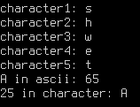
auto keyword:)
automatically identify the data types. without declaring.
#include <iostream>
int main(){
auto var1{12}; //auto identify this as int(integer)
auto var2{13.0}; //auto identify as double
auto var3{14.0f}; //auto identify as float
auto var4{15.0l}; //auto identify as long double
auto var5{'e'}; //auto identify as char
auto var6{123u}; //auto identify as unsigned int
auto var7{123ul}; //auto identify as unsigned long int
auto var8{123ll}; //auto identify as long long int
return 0;
}
ASSIGNMENT MEANS re-declare value to a same variable.
like in below we can see that intially value has 12 but after it has 13 , to save memory in device.
#include <iostream>
int main(){
int val{12};
std::cout<<"val: "<<val<<std::endl;
val = 13; //NOTE: while assignment we have to use "=" instead of "{}" and "()"
std::cout<<"val: "<<val<<std::endl;
return 0;
}
⇒ output:)
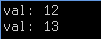
NOTE while using auto keyword for datatypes it is not recommend to do re-declare “it sometimes may fall
in serious problems”.